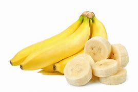

Banana
A banana is an elongated, edible fruit - botanically a berry - produced by several kinds of large herbaceous flowering plants in the genus Musa. In some countries, cooking bananas are called plantains, distinguishing them from dessert bananas. The fruit is variable in size, color, and firmness, but is usually elongated and curved, with soft flesh rich in starch covered with a rind, which may have a variety of colors when ripe. The fruits grow upward in clusters near the top of the plant. Almost all modern edible seedless (parthenocarp) bananas come from two wild species – Musa acuminata and Musa balbisiana. Most cultivated bananas are M. acuminata, M. balbisiana, or hybrids of the two.
